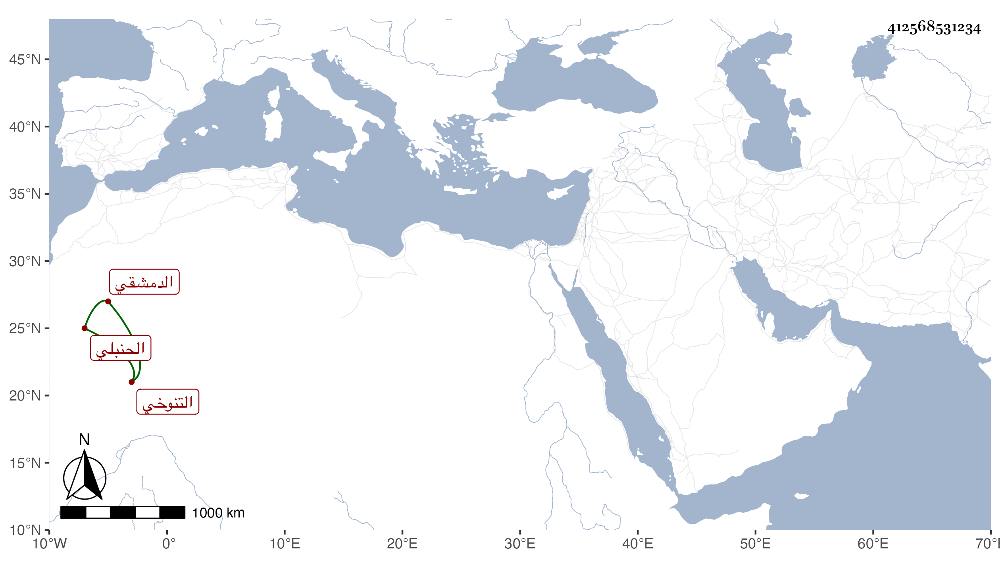

0902Sakhawi.DawLamic.ITO20230111-ara1.EIS1600.412568531234
Biography ID: 412568531234
535
أحمد بن محمد بن محمد بن المنجا بن عثمان بن أسعد بن المنجا التقي بن الصلاح ابن الشرف . الزين بن العز بن الوجيه التنوخي الدمشقي الحنبلي عم أسعد بن علي الآتي . قال شيخنا في أنبائه تفقه قليلا وناب عن أخيه العلاء علي وكان هو القائم بأمره ، ودرس وولي القضاء بأخرة يسيرا وصرف ، ولم يلبث أن مات في سنة أربع قبل إكمال الخمسين ، وكان شهما نبيها .
